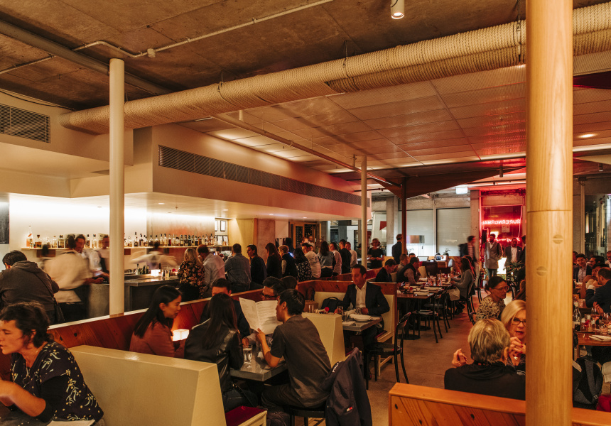
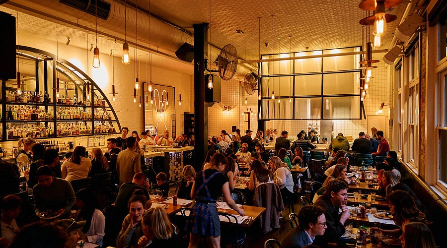
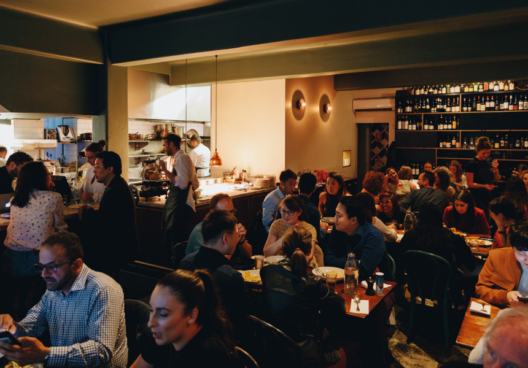
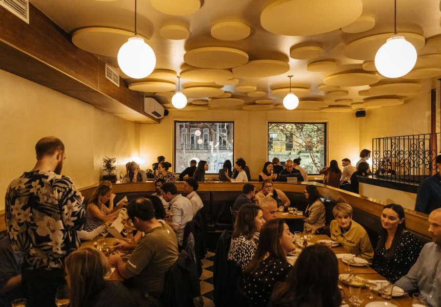

Supernormal
Cuisine: Modern Asian Fusion
Located on Flinders Lane in Melbourne's CBD, Supernormal is a vibrant
Modern Asian restaurant helmed by acclaimed chef Andrew McConnell. The
menu draws inspiration from Japan, China, and Korea, delivering bold,
clean flavours in a stylish contemporary setting.
Signature Dishes
- New England Lobster Roll $28
- Spicy Prawn Toast $22
- Duck Fried Rice $32
Average price per person: $40 - $80
Reservation deposit: $25

Vue de monde
Cuisine: Fine Dining French
Located on level 55 of the Rialto Towers, Vue de monde is Melbourne's
most celebrated fine-dining restaurant. Chef Shannon Bennett's
French-inspired tasting menu showcases the finest Australian produce in
a breathtaking setting with panoramic city views.
Signature Dishes
- Roasted Pigeon $85
- Wagyu Beef Tenderloin $110
- Artisan Cheese Selection$45
Average price per person: $180 - $250
Reservation deposit: $50

Chin Chin
Cuisine: Southeast Asian
Sitting on Flinders Lane, Chin Chin is one of Melbourne's most beloved
Southeast Asian restaurants. The kitchen draws on Thai, Vietnamese, and
Lao influences to create vibrant, punchy dishes packed with fresh herbs,
spices, and bold flavours.
Signature Dishes
- Jungle Curry $28
- Steamed Barramundi $34
- Green Papaya Salad $18
Average price per person: $35 - $60
Reservation deposit: $20

Tipo 00
Cuisine: Italian (Pasta Bar)
Tipo 00 is a beloved Italian pasta restaurant tucked into Little Bourke
Street in the heart of Melbourne. Named after the fine-milled flour used
in authentic Italian pasta, Tipo 00 is dedicated to the craft of
hand-made pasta, serving rich, comforting dishes inspired by the regions
of Italy.
Signature Dishes
- Cacio e Pepe $28
- Tagliatelle Bolognese $30
- Black Truffle Pasta $38
Average price per person: $30 - $55
Reservation deposit: $20

Flower Drum
Cuisine: Cantonese Chinese
A Melbourne institution since 1975, Flower Drum on Market Lane is widely
regarded as one of Australia's finest Cantonese restaurants. The elegant
dining room and exemplary service set the tone for an exceptional meal,
featuring classic Cantonese dishes prepared with the highest-quality
ingredients.
Signature Dishes
- Peking Duck (Half) $55
- Steamed Dim Sum Basket $22
- Crispy Skin Chicken $42
Average price per person: $50 – $90
Reservation deposit: $30

Mamasita
Cuisine: Mexican
Mamasita is Melbourne's favourite Mexican restaurant, bringing the
authentic flavours of Mexico City to Collins Street since 2009. The menu
is built around traditional street food — corn tortillas, slow-cooked
meats, fresh salsas, and inventive tostadas — all made from scratch
daily.
Signature Dishes
- Al Pastor Tacos (3 pcs) $22
- Beef Birria $28
- Churros with Chocolate $14
Average price per person: $25 – $45
Reservation deposit: $15